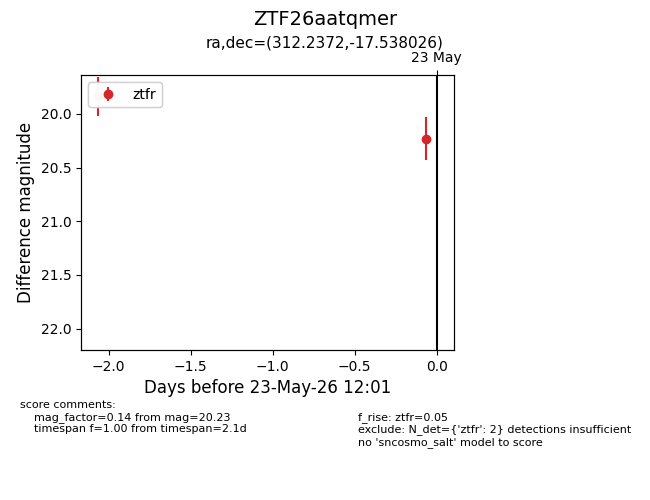
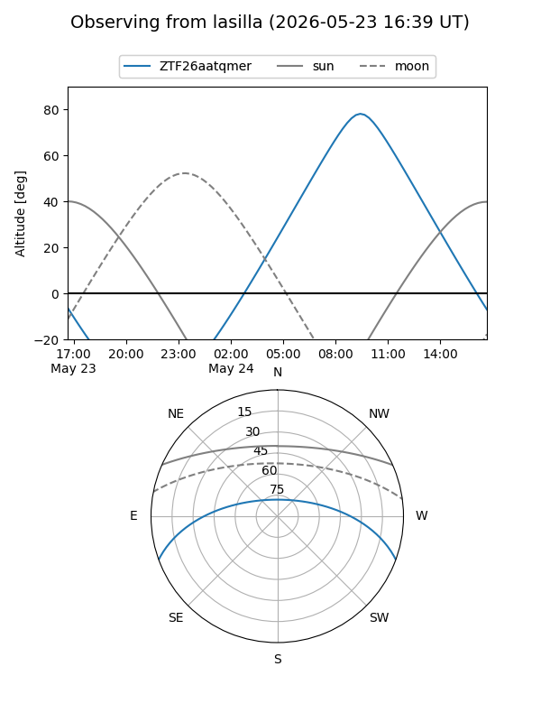
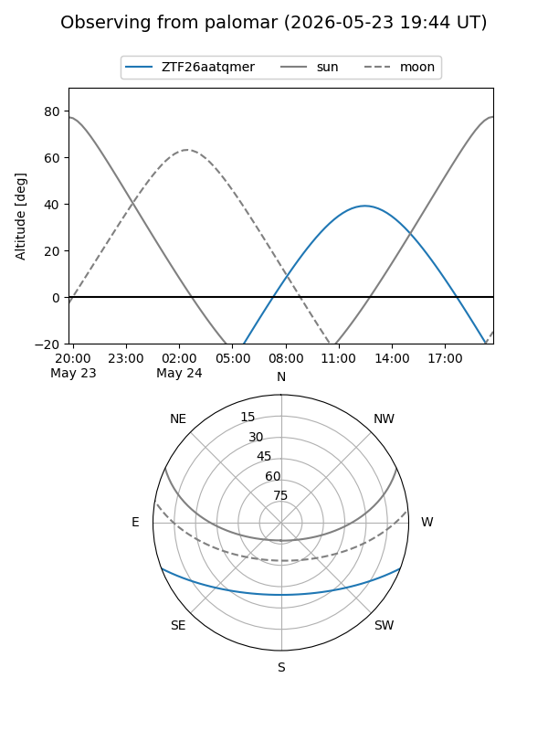

ZTF26aatqmer
Target ZTF26aatqmer at 2026-05-23 12:03
Aliases and brokers:
lsst-FINK: link
lsst-Lasair: link
lsst-ALeRCE: link
ztf-FINK: link
ztf-Lasair: link
ztf-ALeRCE: link
alt names
ZTF26aatqmer (ztf,fink_ztf)
Coordinates:
equatorial (ra, dec) = 312.2372,-17.53803
equatorial (HMS+DMS) = 20:48:56.94,-17:32:16.89
galactic (l, b) = (29.1520,-33.62182)
Flags:
Photometry:
last ztfr=20.23
2 ztfr detections
Lightcurve

Visibility


Additional plots